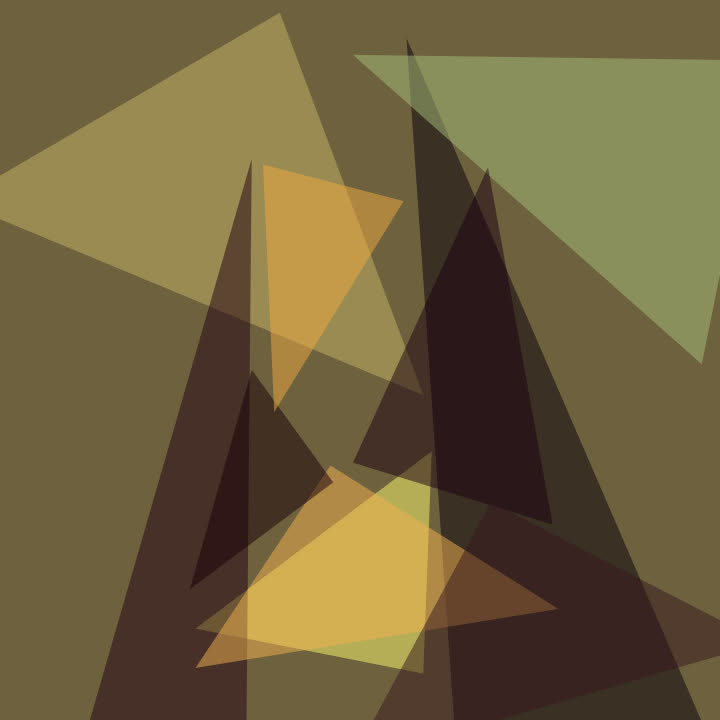
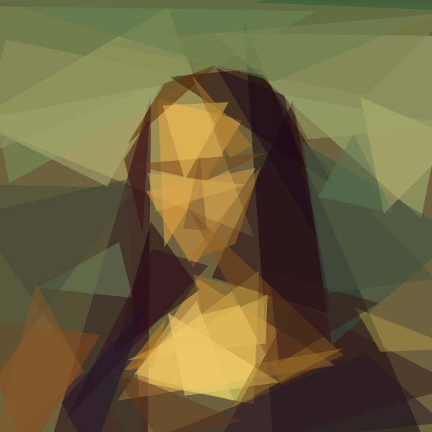
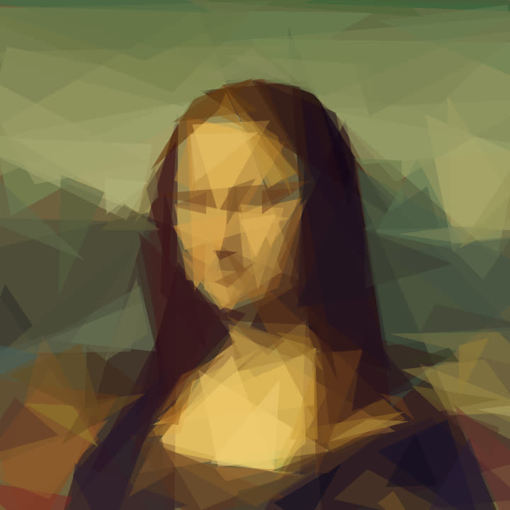
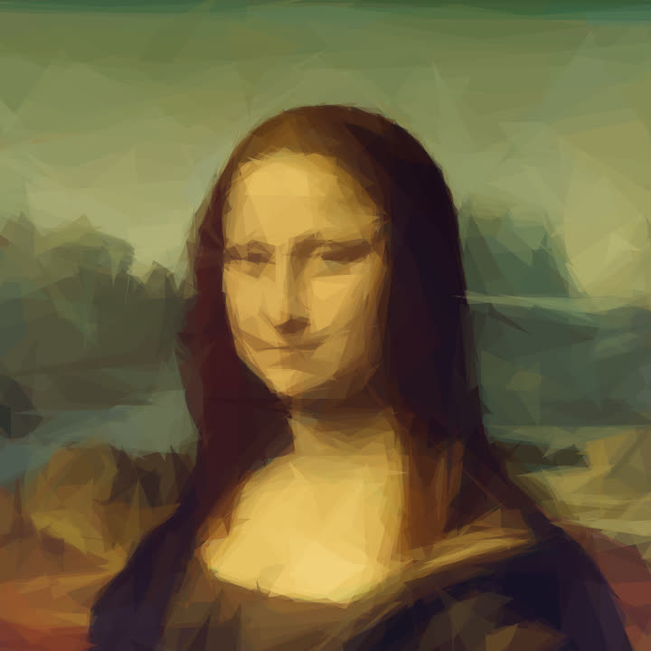

How it works
An algorithm looks for the one shape that makes the picture most like the original, adds it, and starts again. The first shapes block in the big areas; the later ones bring the detail.

1 · Upload a photo or a video, or drop it in a folder.
2 · Watch it build, live, and tune the number and kind of shapes.
3 · Pick a template: the reveal, a countdown, a lens, a guessing game…- 4 · Review and publish the vertical video (1080×1920) to your own account.
Gallery
The same painting with four kinds of shapes, 400 of each.

Mona Lisa, Leonardo da Vinci (public domain).
Video templates
Each template is a short story with the shapes. Texts, music and an ending with your brand are set per video, in several languages.
Reveal
The shapes build the picture, then the real photo appears.
What is it?
Starts on an extreme close-up and pulls back in steps, with clues, until the reveal.
3, 2, 1
A countdown: each number brings a burst of shapes, and on "Go!" the photo.
Likeness %
A real likeness percentage climbs as the picture builds, with a hit at each milestone.
Lens
A magnifying glass shows the original hidden under the shapes.
Curtain
A line sweeps back and forth: the original on one side, the shapes on the other.
Which level?
10, 25, 50, 100 shapes… at which level did you recognize it?
Video in shapes
A whole video turned into moving shapes, then the original.
Publishing to TikTok and YouTube
Shape it up publishes only to accounts you connect yourself, and only the videos you send.
- You connect your own account with the official sign-in of TikTok (Login Kit) or Google. Shape it up never sees your password.
- You review every post before it goes out: the video, the caption, who can see it, whether comments, Duet and Stitch are allowed, and the disclosure of branded or promotional content. Nothing is published until you confirm.
- Official APIs only: TikTok's Content Posting API and the YouTube Data API. It uses your basic profile to show which account is connected, and permission to publish your videos.
- Your data stays with you: the app runs on your own computer, the access tokens are stored only there, and "Disconnect" deletes them. You can also revoke access at any time from your TikTok or Google account settings.
See the Privacy Policy and the Terms of Service.
Questions
Is it free?
Yes. Shape it up is open source (To-Primitive on GitHub). There are no accounts, subscriptions or payments.
Do I need to install anything?
To try it, no: the browser version works with images and your camera. The full app, with video, templates and publishing, runs on your computer with Docker.
What happens with my photos and videos?
They stay on your computer. They only leave it when you publish one, and only to the account you chose.
Can it post without me?
Only if you set a publishing schedule yourself, and only videos you put in your own queue. Posting right away always shows the confirmation screen first.
Who makes it?
An independent creator, as an open-source project. Questions and suggestions are welcome on the project's GitHub page.
En español
Shape it up recrea fotos y videos con formas geométricas (triángulos, círculos, rectángulos, polígonos) y los convierte en videos verticales cortos para TikTok, YouTube Shorts y Reels, con templates, textos en varios idiomas, música y una escena final de marca. Cada video se revisa antes de publicarlo en tu propia cuenta: quién lo ve, comentarios, Dúo y Stitch, y si es contenido de marca. La app corre en tu computadora y los permisos de las cuentas se guardan solo ahí. Probala en el navegador · Términos · Privacidad.